Chapter 2 Key Statistical Concepts
2.1 Samples and Populations
Statistics: Inferences from a sample about a defined population.
Population: The main goal of health research is to learn about health outcomes and their drivers in the population.
This is the aim of clinical trials and most observational health care studies.
The population can be well defined at the outset
-All people who were in the city of Hiroshima at the time of the atomic bombings and survived the first yearOr can be hypothetical
-All breast cancer patients who have undergone or will undergo radical mastectomy.A sub-population is a population in and of itself that satisfies well-defined properties.
-Men under the age of 20 years-Patients with hormone-receptor-positive breast cancer who have undergone radical mastectomy.Many scientific questions relate to differences between sub-populations
-Comparing treated and untreated concern sub-populations as they estimate the mean outcome for different groups (sub-populations) defined by the covariates.Sample: A sample is a subset of the population that is used to learn about that population.
-Sub-population: fixed criteria-Sample: random mechanism-Survey samples are examples of random samples, but many observational studies are not randomly sampled.Regardless of how samples are obtained, their use to learn about a target population means that issues of representativeness are inevitable and deserve to be addressed.
2.2 Statistics Basics
2.2.1 Random Variables
The study of health care outcomes is the study of the random variables that measure these outcomes.
A random variable captures a specific characteristic of individuals in the population, and its values typically vary across individuals.
Each random variable can take on a range of values in theory although, in practice, we observe a specific value for each individual.
Examples of random variables that are health outcomes:
-Whether a patient is hospitalized or re-admitted after surgery-Whether a breast cancer patient receives a mastectomy or a lumpectomy-Types of prescription medications filled for a specific condition-Days hospitalized after a specific type of surgery-Inpatient, outpatient, or prescription medication expenditures within a year-Number and types of advanced imaging tests after primary cancer treatment-Number of outpatient visits over a defined time interval-Total annual expenditures among patients within a specific health category.Random variable: Generically or theoretically, capital letters like \(X\) and \(Y\).
Specific values: small letters like \(x\) and \(y\).
Thus, for example, we might talk about an unspecified patient age \(X\) with a range from 20 to 85 years, but for a given patient, we might observe a specific age \(x\) equal to 62 years.
2.2.2 Dependent and Independent Variables
A key first task in any analysis is to identify the dependent (\(Y\)) and independent (\(X\)) variables.
Dependent variable
-Response variable-OutcomeIndependent variable
-Explanatory variable-Predictor-CovariateIn regression analyses, the central question concerns how Y changes as X varies. More precisely, if the value of the independent variable \(X\) changes, then what is the consequence for the dependent variable \(Y\)?
Loosely speaking, the independent and dependent variables are analogous to “cause” and “effect,” where the quotation marks here emphasize that this is just an analogy, and that cause must be rigorously determined using an appropriate study design and analysis.
Whether a variable is an independent or a dependent variable depends on the research question.
Sometimes be quite challenging to decide which variable is dependent and which is independent, particularly when there are feedback loops going in both directions between the variables.
Example: Association between elective vigorous exercise and insomnia
-Exercise (done at the right time of the day) may reduce insomnia.-But insomnia may also reduce a person’s ability to exercise.Sometimes, outcomes other than the one specified may masquerade as potential independent variables.
Example: How medical expenditures in a given year depend on smoking history.
-Independent variable: smoking history-Dependent variable: medical expenditures-How about number of hospitalizations?-Number of hospitalizations will be strongly correlated with medical expenditures, but for this question both hospitalizations and medical expenditures are best considered as dependent variables that coevolve.
2.2.3 Statistical Distributions and Their Summaries
Each random variable has a distribution that describes the probability that the variable takes any value or interval in its range.
A categorical variable can take any of a finite number of discrete values, and the distribution is given by a finite set of probabilities corresponding to these possible values, with the probabilities summing to 1.
A continuous variable has many (effectively an infinite number of) possible values. Consequently, the probability of each value is very small.
In principle, we can imagine the distribution of a continuous variable as an extremely detailed histogram in which the widths of the intervals become very small.
The histogram becomes a curve called the probability density function (PDF) of the random variable, and the area under the PDF over any interval represents the probability that the random variable will have a value within that interval.
The cumulative distribution function (CDF) at a specified value gives the probability that the random variable takes on a value smaller than or equal to that value and is mathematically equal to the integral of the PDF up to that value. Words used to describe the shape of a distribution include symmetric, skewed, heavy-tailed or kurtotic (referring to a high frequency of extreme values), and uni- or multimodal (referring to the number of peaks of the most likely values).
Quantitative summaries of distributions often focus on identifying the most typical, or representative, value of a random variable.
The mean
-Mean of a random variable \(Y\) is denoted by \(E(Y)\).Other common summaries: percentiles or quantiles
-Median is the 50th percentile and represents the center of the distribution in the sense that 50% of the observations are below it and 50% are above it.The median and the mean coincide if the distribution is symmetric and differ otherwise; the mean is influenced by extreme (large and small) observations, while the median is not.
Health care outcomes are often right-skewed because of the presence of a few heavy users whose health is extremely poor relative to the rest of the population.
-Mean is larger than the median, and therefore the median may be a better summary of a typical value of the population.
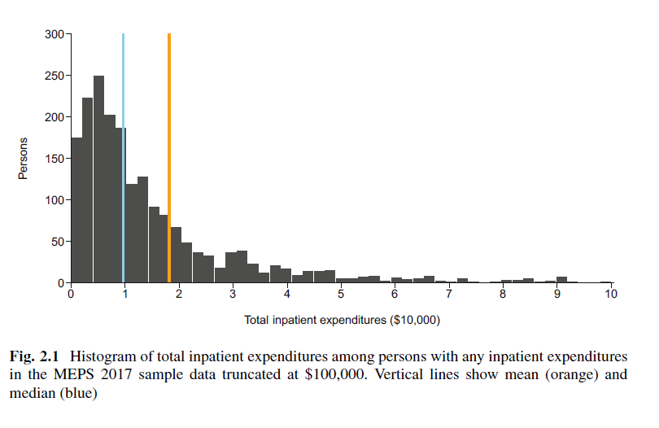
Figure 2.1 is a histogram of total costs among persons with any reported inpatient costs based on data from the Medical Expenditure Panel Survey (MEPS) in 2017.
The MEPS collects information on socio-demographics, health behavior, health insurance, health care utilization, and expenditures for a population-representative sample of households in the United States.
The figure shows an extreme right-skewed distribution with a mean of 18,145 and a much lower median of 9664.
2.2.4 Parameters and Models
Parameters, typically denoted by Greek letters like \(\mu\) and \(\alpha\), allow us to specify which member of the family.
Thus, we can talk about a random variable having a normal distribution, but by specifying the mean \(\mu=9.8\) and the variance \(\sigma^2=2.4\), we narrow focus to a specific normal distribution.
Parametric statistical methods specify the family of distributions and then use the data to learn about its specific member by estimating the parameters.
If \(f\) is the PDF of an outcome variable \(Y\), interest may focus on its mean and variance.
In regression analysis, we try to explain how the parameters of \(f\) depend on covariates \(X\).
In classical linear regression, we assume that \(Y\) has a normal distribution with mean \(\mu=E(Y)\), and we estimate how \(E(Y)\) depends on \(X\).
The term model is ubiquitous in statistics.
The model comprises the assumptions and mathematical specifications for the analysis.
The model depends on the data and the research question, but it is rarely unique; in most cases, there is more than one model that might reasonably address the same question given the data.
In predicting annual medical expenditures based on the MEPS, for example, the model specification includes the set of candidate covariates, the mathematical expression linking the predictor variables with the expenditure outcome, and any assumptions about the distribution of the outcome.
2.2.5 Estimation and Inference
Estimation is the process by which the sample is used to learn about the population.
The sample mean is a natural estimate of the population mean, and the sample median is a natural estimate of the population median.
When we talk about estimating a population summary measure (sometimes referred to as a population parameter) or estimating the distribution of a random variable, we are talking about using the data to learn about these features in the population.
Statistical inference is the process by which sample estimates are used to answer research questions and address specified hypotheses about the population.
Thus, for example, the sample mean is an estimate, the sample standard error is an estimate, and a hypothesis test is a procedure by which these estimates are combined to make inferences.
2.2.6 Variation and Standard Error
Estimates are functions of the sampled data.
Although we always observe only a single sample, we must take into consideration the fact that it was randomly drawn among many potential samples.
Thus, we can think about an estimate as having a distribution that reflects its variation over repeated samples.
The standard error of an estimate quantifies the variation that we would expect if we could repeat the sampling and modeling that generated the estimate many times.
Technically, the standard error is measured by the standard deviation of the estimate.
The standard deviation (\(SD(Y)\)) of a variable \(Y\) is the square root of the variance, which measures the average (squared) distance between the values of \(Y\) and its mean.
While the SD is used as the natural measure of variability, having the same physical units as \(Y\), the variance is more convenient for mathematical calculations.
The standard error of an estimate is a function of the sample data, the formulation of the estimate, and the variability of the observations.
-A higher standard error implies that we would expect greater variation if we could repeat the sampling and estimation many times.-A sample of 10 randomly selected \(Y\) values from a population will produce a higher standard error around an estimate than a sample of \(100\) randomly selected \(Y\) values.The standard error of an estimate is also a function of the model used.
-Different models may yield similar estimates but produce different standard errors.Confidence intervals place estimates in the context of their standard errors; they are sometimes referred to as interval estimates.
Like standard errors, confidence intervals are interpreted in terms of what we would expect if we could repeat the sampling and estimation many times.
In the case of a 95% confidence interval for the mean, the appropriate interpretation is: if the sampling and estimation could be repeated many times, an interval so constructed would include the true mean 95% of the time.
Interpretation of confidence intervals can be challenging because a specific interval is estimated but it is interpreted in terms of the underlying sampling and estimation process.
2.2.7 Conditional and Marginal Means
In health care studies, we are frequently interested in comparisons of outcomes (\(Y\)) in sub-populations defined by values of random variables (\(X\)).
The conditional mean of \(Y\) given \(X=x\)
-\(E(Y|X=x)\),-The mean for the sub-population with the specific value (\(x\)) of the predictor variable (\(X\)).
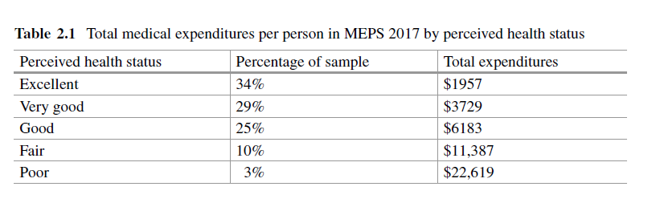
Table 2.1 shows estimated total medical expenditures per person (\(Y\)) for MEPS 2017 participants according to perceived health status at the start of the year (\(X\)), ranging from “Excellent” to “Poor.”
The table also provides the percentage of respondents falling into each health category corresponding to the size of each sub-population.
The conditional mean expenditures given “Excellent” health
-\(E(Y|X=“Excellent”)=1,957\)The conditional mean expenditures given “Poor” health
-\(E(Y|X=“Poor”)=22,619\)Medical expenditures are strongly dependent on perceived health status
-Worse health -> higher expenditures.-If a person had “Excellent” health, one would predict very different annual expenditures than if that person had “Poor” health.What if we wanted to predict a person’s total medical expenditures without knowing his or her perceived health status?
-Reasonable guess: weighted average of the conditional means, with weights given by those percentagesThis average of the conditional means
-Called the marginal mean \(E(Y)\) because it no longer conditions on \(X\); rather, it averages over the distribution of \(X\).-\(E(E(Y|X))=E(Y)\)In Table 2.1, the marginal mean, calculated by the weighted average, is: \[ E(Y) = 1957 \times 0.34 + 3729 \times 0.29 + 6183 \times 0.25 + 11387 \times 0.10 + 22619 \times 0.03 = 5110 \]
This might seem low when compared with the highest expenditures in the table, but this is because persons with better health, who have correspondingly lower expenditures, were more frequent in the sample than persons in poorer health.
-This concept of a marginal mean extends also to other statistics, such as the variance, and even to distributions.Thus, we may talk about the conditional distribution of \(Y\) given \(X=x\) if we want to study the sub-population defined by \(X=x\), and, by extension, the marginal distribution of \(Y\) if we are interested in the whole population.
2.2.8 Joint and Mixture Distributions
Joint distributions: two or more random variables vary together, e.g., when two outcome variables coevolve in a dependent fashion.
An example of this phenomenon might be total medical care costs and hospitalizations over a specified interval.
In cases where we have multiple coevolving outcomes, we do not generally try to estimate the conditional mean of one outcome given another.
Rather, we model them together as a multivariate outcome.
Mixture distributions: when one part of the data follows one distribution and the other part follows another distribution.
-Two-part models can be used to study a type of mixture distribution for medical expenditures where one part of the sample (a fraction \(p\)) has no medical expenditures because they have not accessed the health care system and the other part of the sample (a fraction \(1-p\)) has expenditures that follow a specified distribution.-Figure 2.1 shows an extremely right-skewed distribution that also has a high frequency of low values;-This distribution can be modeled as a two-part mixture distribution with a spike at zero reflecting the fraction of the sample incurring zero health care expenditures for the year (see Chap. 6).
2.2.9 Variable Transformations
Transformation of a random variable can play a useful role in a statistical analysis.
Consider a random variable \(Y\) with pdf \(f\), and suppose we have a general function of \(Y\), \(G(Y)\).
-Some functions that will be of interest, particularly in studying health care expenditures, include the logarithmic transformation (\(G(Y)=log(Y)\)) and the exponential transformation (\(G(Y)=exp(Y)\)).-How does applying \(G\) change the distribution of \(Y\) and its summaries such as the mean, variance, and percentiles?-If \(G\) is a linear function, i.e., \(G(Y)=aY+b\), then there are known formulas for the mean and variance of \(G(Y)\); namely, \(E[G(Y)]=aE(Y)+b\) and \(Var[G(Y)]=a^2Var(Y)\).-If \(G\) is a non-linear function, then it can completely change the distribution of \(Y\) and alter its mean and variance in ways that require customized study.When \(G\) is one of logarithmic or exponential transformations, the following are true:
If \(M\) is the median of \(Y\), then \(G(M)\) is the median of \(G(Y)\), and similarly for other percentiles.
If \(p\) is the probability that \(Y\) falls in an interval \((a, b)\), then \(p\) is also the probability that \(G(Y)\) falls in the interval \((G(a), G(b))\).
Thus both percentiles and probability are translated by these transformations.
-In fact, (1) and (2) are true for any increasing transformation.
2.3 Common Statistical Distributions and Concepts
2.3.1 The Bernoulli and Binomial Distributions for Binary Outcomes
Binary health care outcomes: whether a patient is re-admitted after surgery.
The Bernoulli distribution is the family of distributions for a binary outcome \(Y\) that can take on values 0 and 1.
-Refer to these as negative and positive outcomes, respectively, reflecting non-occurrence or occurrence of an event of interest.Bernoulli Probability mass function (pmf)
\[P(x) = p^x(1-p)^{1-x},\quad x = 0,1 \]
\(p\) : sucess probability, i.e. \(P(X=1) = p\), \(E(X) = p\), \(Var(X) = p(1-p)\).
Binary regression analysis focuses on \(P(Y=1)\), the probability that \(Y\) will take the value 1, and attempts to identify factors \(X\) that are associated with that probability.
-Example: studying the factors that are associated with higher versus lower risks of re-admission.-When the Bernoulli distribution is used, it turns out that \(P(Y=1)\) is in fact the mean of \(Y\) ; thus, the problem of learning about the correlates \(X\) of \(P(Y=1)\) is essentially the same as the problem of modeling the conditional mean \(E(Y|X)\).Predicting a binary outcome is a version of a classification problem in which observations fall into two classes and the objective is to identify the combination of factors \(X\) that best predicts class membership.
-Binary prediction problem is prevalent in the statistical learning literature, which has its own collection of algorithms for classification problems.Some important features of the Bernoulli distribution
-Even though there are two outcomes in the binary setting, the frequency distribution of the outcome is completely determined by the probability of one of the outcomes, conventionally taken to be \(p=P(Y=1)\), because the probability of the alternative outcome is \(1-p\).-Classical statistical inference is concerned with identifying predictors \(X\) associated with the likelihood of \(Y\) taking the value 1 rather than 0.-The odds of \(Y\) being 1 (rather than zero) are written as \(p/(1-p)\).-Logistic regression identifies predictors of higher versus lower odds of \(Y\) taking the value 1.-The mean of \(Y\), \(E(Y)\), is p.-Since the range of \(Y\) is from zero to one, the mean is somewhere in between.-The variance of \(Y\), \(Var(Y)\), is \(p(1-p)\).-Thus, the variance is not independent of the mean as is the case with the normal distribution.-Instead, there is a very specific relationship between the mean and the variance.When we have a set of \(n\) independent Bernoulli variables, the total number of positive outcomes has a binomial distribution, and this total has mean \(np\) and variance \(np(1-p)\).
-Thus, the total number of re-admissions after surgery at a specific hospital might be binomial, where \(n\) is the number of surgeries performed at that hospital.Probability mass function
\[ P(X = x) = \binom{n}{x}p^x(1-p)^{n-x}, \quad x=0,1,...,n\]
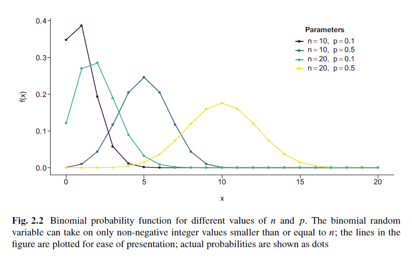
- Figure 2.2 shows several binomial distributions with different \(n\) and \(p\).
2.3.2 pmf plot
library(ggplot2)
library(gridExtra)
p <- c(0.2, 0.5, 0.8)
ps10 <- c(dbinom(0:10, 10, p[1]) ,dbinom(0:10, 10, p[2]), dbinom(0:10, 10, p[3]))
ps30 <- c(dbinom(0:30, 30, p[1]) ,dbinom(0:30, 30, p[2]), dbinom(0:30, 30, p[3]))
ps50 <- c(dbinom(0:50, 50, p[1]) ,dbinom(0:50, 50, p[2]), dbinom(0:50, 50, p[3]))
ps100 <- c(dbinom(0:100, 100, p[1]) ,dbinom(0:100, 100, p[2]), dbinom(0:100, 100, p[3]))
data10 <- data.frame(x = 0:10, fx = ps10, p = rep(p, each = 11))
data30 <- data.frame(x = 0:30, fx = ps30, p = rep(p, each = 31))
data50 <- data.frame(x = 0:50, fx = ps50, p = rep(p, each = 51))
data100 <- data.frame(x = 0:100, fx = ps100, p = rep(p, each = 101))
pmf10 <- ggplot(data10, aes(x = as.factor(x), y = fx, col = as.factor(p), group = p)) +
geom_point() +
geom_line() +
labs(title = "Binomial Dist. when n = 10",
x = "x",
y = "p(x)",
fill = "p") +
scale_color_discrete(name="p")
pmf30 <- ggplot(data30, aes(x = x, y = fx, col = as.factor(p), group = p)) +
geom_point() +
geom_line() +
labs(title = "Binomial Dist. when n = 30",
x = "x",
y = "p(x)",
fill = "p") +
scale_color_discrete(name="p")
pmf50 <- ggplot(data50, aes(x = x, y = fx, col = as.factor(p), group = p)) +
geom_point() +
geom_line() +
labs(title = "Binomial Dist. when n = 50",
x = "x",
y = "p(x)",
fill = "p") +
scale_color_discrete(name="p")
pmf100 <- ggplot(data100, aes(x = x, y = fx, col = as.factor(p), group = p)) +
geom_point() +
geom_line() +
labs(title = "Binomial Dist. when n = 100",
x = "x",
y = "p(x)",
fill = "p") +
scale_color_discrete(name="p")
grid.arrange(pmf10, pmf30, pmf50, pmf100, nrow = 2, ncol = 2)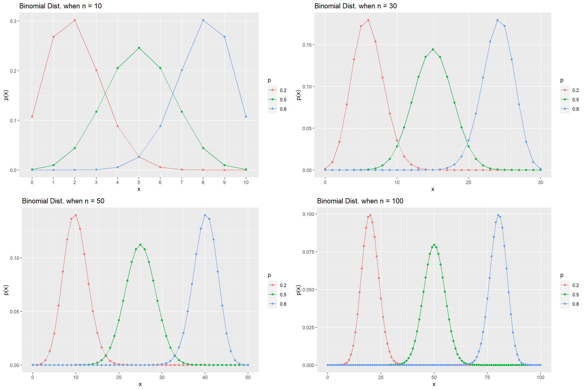
2.3.3 comparison with simulated value
library(dplyr)##
## Attaching package: 'dplyr'## The following object is masked from 'package:gridExtra':
##
## combine## The following objects are masked from 'package:stats':
##
## filter, lag## The following objects are masked from 'package:base':
##
## intersect, setdiff, setequal, unionsimul <- rbinom(10000, size = 10, prob = 0.6) %>% as.data.frame()
colnames(simul) <- "simul"
simul1 <- simul %>% group_by(simul) %>% summarise(n = n()) %>% mutate(prob = n/10000)
sim_plot <- simul1 %>% ggplot(aes(x = simul, y = prob)) +
geom_bar(stat = "identity", fill = "grey", color = "black") +
ggtitle("10000 trials ; Simuation of Bionomial Dist. with n =10, p = 0.6")
t_prob <- data.frame(x = 0:10, y = dbinom(0:10, 10, 0.6))
sim_plot + geom_point(data = t_prob, aes(x = x, y = y), color = "red") +
geom_line(data = t_prob, aes(x = x, y = y), color = "red")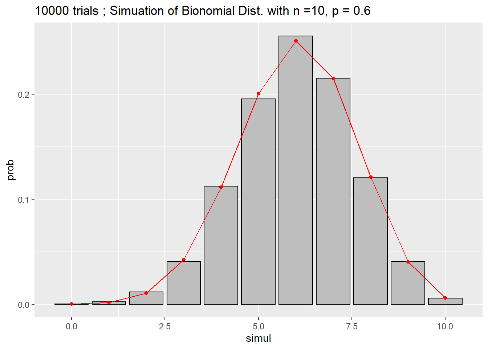
The binomial distribution only results from a set of Bernoulli variables if the total number \(n\) is fixed, and only if the Bernoulli variables are independent.
If we are considering the number of re-admissions given the total number of surgeries performed at a specific hospital, the requirement of independence may be violated by the clustering of patients within surgeons;
-Patients treated by the same surgeon may be more similar to one another in terms of their risk of re-admission than patients treated by other surgeons.-This kind of clustering induces correlation between patients treated by the same surgeon.
2.3.4 The Multinomial Distribution for Categorical Outcomes
The multinomial distribution: generalization of the binomial to the setting where there are multiple types of outcomes beyond just positive or negative.
-Example 1: treatment choice when there are more than two treatments, such as surgery, radiation, or hormonal therapy for cancer.-Example 2: responses to a survey question about health status, with responses being on a five-point scale.In the first example, we would describe the outcome as multinomial with three (unordered) categories.
In the second example, we could describe the outcome as multinomial with five (ordered) categories.
probability mass function
\[P(x_1, x_2, ... , x_k \; ; \; n_1, n_2, ..., n_k) = \frac{n!}{x_1!x_2! \cdots x_k!} p_{1}^{x_1}p_{2}^{x_2} \cdots p_{k}^{x_k}\]
\(\sum_{i=1}^{k} X_i = n\), \(E(X_i) \; =\;np_i\), \(Var(X_i)\;=\;np_i(1-p_i)\)
As in the binomial setting, attention focuses on the probabilities or frequencies of each category or, equivalently, the probability that \(Y\) falls into each category.
In the binary setting, we considered \(p\) and \(1-p\); in the multinomial setting, we have multiple pass many as the possible values of \(Y\).
-However, the probabilities must add up to 1 because each observation must fall into one of the categories.-Thus, in the case of \(K\) categories, the distribution has \(K-1\) parameters.-The multinomial distribution of self-reported health status on a five-point scale would have four independent categories.Multinomial regression is concerned with identifying the factors that predict the likelihood of an outcome being in one category rather than another.
-Example: studying how a diabetes diagnosis impacts self-reported health, we would want to understand how \(P=(Y=k)\), the probability that \(Y\) will take on category \(k\), changes depending on diabetes status.
2.3.5 The Poisson and Negative Binomial Distributions for Counts
In the study of health care outcomes, we often study counts:
-Numbers of doctor visits-Numbers of prescriptions filled-Numbers of procedures of a specific type performed in a facility over a month or a year.The most basic parametric distribution for count data
-Poisson distributionThe Poisson distribution: probability that a count of events in a given time interval will be zero, one, two, and so on.
-Events occur at a constant rate in a memoryless fashion (i.e., the chance that an event will occur within a specified interval is independent of the time elapsed since the last event).-The Poisson distribution is the distribution of the number of such events in a specified time interval.Probability mass function
\[P(x) = \frac{e^{-\lambda} \; \lambda^x}{x!}, \quad x= 0,1,2, \ldots\]
\(\sum P(x) = 1\), \(E(X) = \lambda\), \(var(X) = \lambda\)
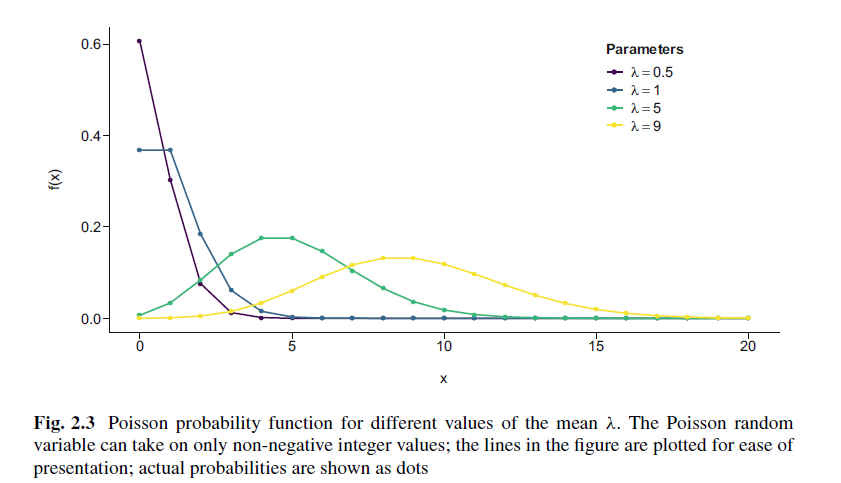
- Figure 2.3 shows several Poisson distributions with different means.
lambda <- c(rep(1, 21), rep(4, 21), rep(10, 21))
pois <- c(dpois(0:20, lambda = 1), dpois(0:20, lambda = 4), dpois(0:20, lambda = 10))
data_pois <- data.frame(lambda = lambda, x = rep(0:20, 3), fx = pois)
data_pois %>% ggplot(aes(x = x, y = pois, col = as.factor(lambda), group = lambda)) +
geom_point() +
geom_line() +
labs(title = expression(paste("Poisson Dist. when ", lambda, " = 1, 4, 10")),
x = "x",
y = "p(x)",
fill = "p") +
scale_color_discrete(name = expression(lambda))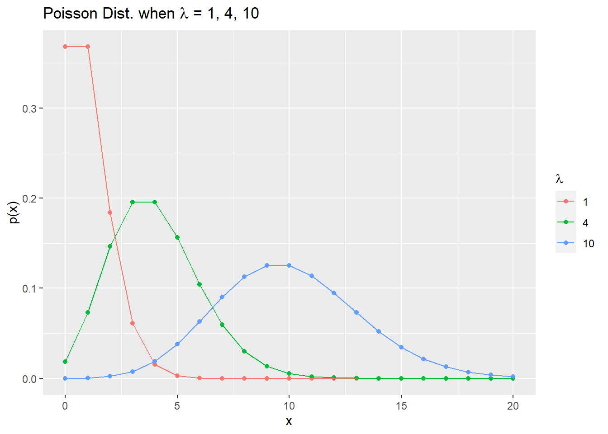
- comparison with simulated value
simul_pois <- rpois(10000, lambda = 5) %>% as.data.frame()
colnames(simul_pois) <- "simul"
simul1_pois <- simul_pois %>% group_by(simul) %>% summarise(n = n()) %>% mutate(prob = n/10000)
sim_pois_plot <- simul1_pois %>% ggplot(aes(x = simul, y = prob)) +
geom_bar(stat = "identity", fill = "grey", color = "black") +
coord_cartesian(xlim = c(0, 20)) +
ggtitle("10000 trials ; Simuation of Poisson Dist. with lambda = 5")
t_prob_pois <- data.frame(x = 0:20, y = dpois(0:20, 5))
sim_pois_plot + geom_point(data = t_prob_pois, aes(x = x, y = y), color = "red") +
geom_line(data = t_prob_pois, aes(x = x, y = y), color = "red")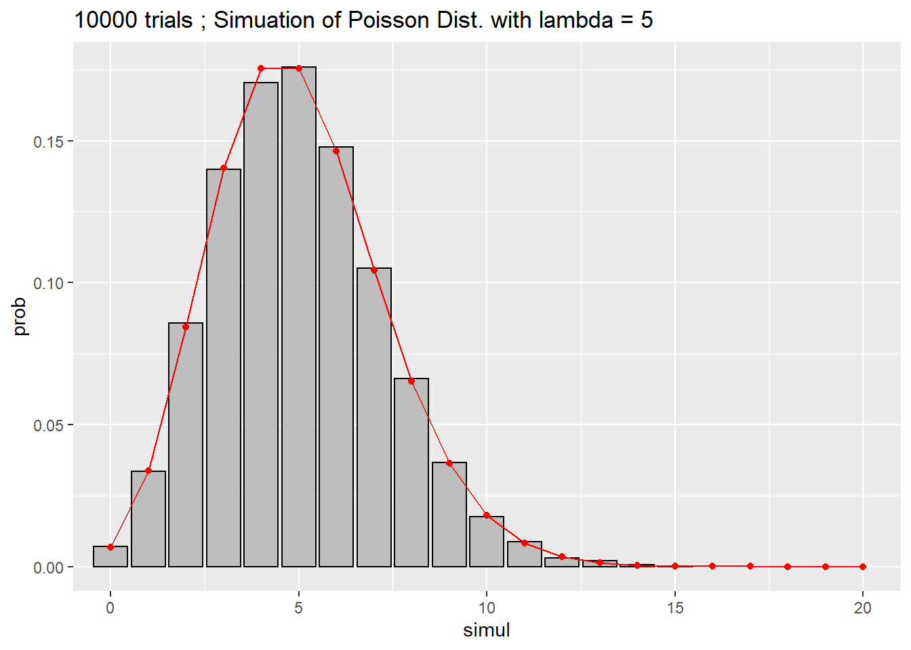
One important feature of the Poisson distribution
-Its mean and variance are equal.-This, together with the basic assumptions upon which it is based, makes the Poisson distribution highly restrictive for modeling count health data.In practice, counts of medical events and procedures almost never satisfy the assumptions that generate a Poisson distribution.
-Most often, the variance of a count outcome is considerably larger than its mean value.
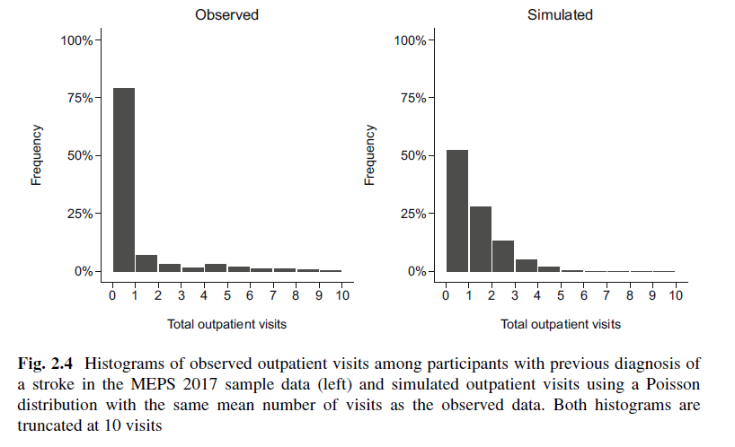
Figure 2.4 is a histogram of outpatient visits among participants who reported a previous diagnosis of a stroke in the MEPS 2017 data.
The histogram for the observed data is graphed next to a histogram reflecting a Poisson distribution with the same average number of visits (15).
The observed data histogram shows higher frequencies at the extremes of the range, with considerably more patients with no visits and a longer right tail than the Poisson data histogram.
In fact, the variance of the observed number of visits is 24, more than 15 times greater than the observed mean. We say that the observed number of visits is overdispersed.
When a count outcome is overdispersed:
-we look to an alternative model for count data that accommodate a variance that is larger than the mean.-The negative binomial distribution provides such an alternative.-Like the Poisson, it is appropriate for discrete, non-negative outcomes, but, unlike the Poisson, its variance always exceeds its mean.The mechanism of overdispersion that leads to the negative binomial distribution arises from considering that individuals are heterogeneous in their count data outcomes in a manner that goes beyond observed predictors.
Probability mass function
\[ P(Y = y) = P(y \; failures \;in \; X_1,\ldots, X_{r+y-1} \; and \; X_{r+y+1} = 1) \\\\ = \binom{r+y-1}{r-1}p^{r}(1-p)\; , \; y = 0,1,2,\ldots\]
\(E(Y) = \frac{r(1-p)}{p}\), \(Var(Y) = \frac{r(1-p)}{p^2}\)
2.3.6 pmf plot
p_nb <- c(0.3, 0.5, 0.8)
ps1_nb <- c(dnbinom(0:20, 1, p[1]) ,dnbinom(0:20, 1, p[2]), dnbinom(0:20, 1, p[3]))
ps3_nb <- c(dnbinom(0:20, 3, p[1]) ,dnbinom(0:20, 3, p[2]), dnbinom(0:20, 3, p[3]))
ps5_nb <- c(dnbinom(0:20, 5, p[1]) ,dnbinom(0:20, 5, p[2]), dnbinom(0:20, 5, p[3]))
ps10_nb <- c(dnbinom(0:20, 10, p[1]) ,dnbinom(0:20, 10, p[2]), dnbinom(0:20, 10, p[3]))
data1_nb <- data.frame(x = 0:20, fx = ps1_nb, p = rep(p, each = 21))
data3_nb <- data.frame(x = 0:20, fx = ps3_nb, p = rep(p, each = 21))
data5_nb <- data.frame(x = 0:20, fx = ps5_nb, p = rep(p, each = 21))
data10_nb <- data.frame(x = 0:20, fx = ps10_nb, p = rep(p, each = 21))
pmf1_nb <- ggplot(data1_nb, aes(x = as.factor(x), y = fx, col = as.factor(p), group = p)) +
geom_point() +
geom_line() +
labs(title = "when r = 1 and p = 0.3, 0.5, 0.8",
x = "x",
y = "p(x)",
fill = "p") +
scale_color_discrete(name="p")
pmf3_nb <- ggplot(data3_nb, aes(x = x, y = fx, col = as.factor(p), group = p)) +
geom_point() +
geom_line() +
labs(title = "when r = 3 and p = 0.3, 0.5, 0.8",
x = "x",
y = "p(x)",
fill = "p") +
scale_color_discrete(name="p")
pmf5_nb <- ggplot(data5_nb, aes(x = x, y = fx, col = as.factor(p), group = p)) +
geom_point() +
geom_line() +
labs(title = "when r = 5 and p = 0.3, 0.5, 0.8",
x = "x",
y = "p(x)",
fill = "p") +
scale_color_discrete(name="p")
pmf10_nb <- ggplot(data10_nb, aes(x = x, y = fx, col = as.factor(p), group = p)) +
geom_point() +
geom_line() +
labs(title = "when r = 10 and p = 0.3, 0.5, 0.8",
x = "x",
y = "p(x)",
fill = "p") +
scale_color_discrete(name="p")
grid.arrange(pmf1_nb, pmf3_nb, pmf5_nb, pmf10_nb, nrow = 2, ncol = 2, top = ggpubr::text_grob(label = "Negative Binomial Dist.", size = 20))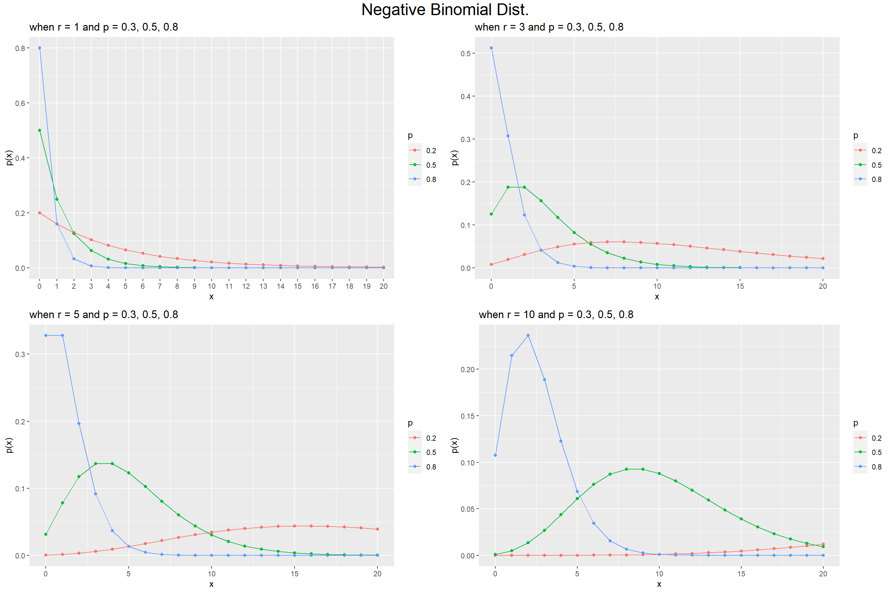
- When r = 1, Geometric Distribution
2.3.7 comparison with simulated value
simul_nb <- rnbinom(10000, 7, 0.5) %>% as.data.frame()
colnames(simul_nb) <- "simul"
simul1_nb <- simul_nb %>% group_by(simul) %>% summarise(n = n()) %>% mutate(prob = n/10000)
sim_nb_plot <- simul1_nb %>% ggplot(aes(x = simul, y = prob)) +
geom_bar(stat = "identity", fill = "grey", color = "black") +
coord_cartesian(xlim = c(0, 20)) +
ggtitle("10000 trials ; Simuation of Nbionmial Dist. with r = 7, p = 0.5")
t_prob_nb <- data.frame(x = 0:20, y = dnbinom(0:20, 7, 0.5))
sim_nb_plot + geom_point(data = t_prob_nb, aes(x = x, y = y), color = "red") +
geom_line(data = t_prob_nb, aes(x = x, y = y), color = "red")
When modeling outpatient visits, for example, one could imagine that each individual has a latent susceptibility that relates to the frequency with which they seek care in the outpatient setting.
Those individuals with low susceptibility would be expected to seek care rarely and have few or no outpatient visits, and those with high susceptibility would have many visits.
Formally, we can think of each person having a Poisson-distributed count outcome \(Y\) , but, rather than everyone having the same mean \(\mu\), each individual, indexed by \(i\), has their own mean, which may be written as \(\mu r_i\).
Here, \(i\) indexes individuals and \(r_i\) is a latent, individual-specific multiplier, sometimes called a frailty, that modifies the overall mean and personalizes it.
We say that a person’s conditional mean given \(r_i\) is \(\mu r_i\), and since the count outcome for person \(i\) is Poisson distributed, the conditional variance for person \(i\) is also \(\mu r_i\).
These are conditional means and variances since they are subject-specific and differ among individuals in the population.
They incorporate the notion of individual heterogeneity and add variability to the marginal distribution of \(Y\).
The negative binomial arises as the marginal distribution of \(Y\) under a very specific distribution for the \(r_i\).
It turns out that if the \(r_i\)s have a gamma distribution (described below) with mean 1 and variance \(\alpha\), then the marginal distribution of \(Y\) is negative binomial with mean \(\mu\) and variance \(\mu(1+\alpha \mu)\).
Mathematically, this result shows that latent heterogeneity in a Poisson setting will generate overdispersion and, under specific assumptions about the form of the heterogeneity, will produce a negative binomial rather than a Poisson distribution.
In practice, the negative binomial is often preferred over the Poisson for modeling count data outcomes due to its greater flexibility and ability to accommodate overdispersion. It should be remembered that the negative binomial model for count data is also quite specific in that it captures a particular mechanism—between-individual heterogeneity—for the overdispersion and makes specific assumptions about how this heterogeneity manifests in the population.
The notion that between-individual heterogeneity might lead to inflation of overall variance arises over and over again in the analysis of health outcomes.
The representation of this heterogeneity via a latent, individual-specific factor that varies across individuals according to a specified distribution is the foundation for random effects and frailty models in the settings of clustered, longitudinal, and failure-time outcomes.
Mathematical details aside, the way in which this additional heterogeneity affects overall variability is the same across settings. Allowing individuals to deviate from a common mean outcome in a personalized way changes the spread of the marginal distribution of the outcome.
The histogram of the outcome expands to reflect a greater frequency of more extreme outcomes (from individuals with very low and very high frailties) and leads to greater mass in the tails of the distribution as illustrated in the left panel of Fig. 2.4.
This is what we mean by overdispersion relative to the Poisson distribution.
2.3.8 The Normal Distribution for Continuous Outcomes
Normal distribution
-Symmetric bell shape-Two parameters: mean \(\mu\) (center of symmetry), standard deviation \(\sigma\) (measure of the variability of the values around the mean)
*Probability density funciton
\[ f_X(x) = \frac{1}{\sqrt{2\pi\sigma^2}}e^{-\frac{(x-\mu)^2}{2\sigma^2}}, \; -\infty < x < \infty, \; -\infty< \mu<\infty,\; \sigma^2 > 0\]
\(E(X) = \mu\), \(Var(X) = \sigma^2\)
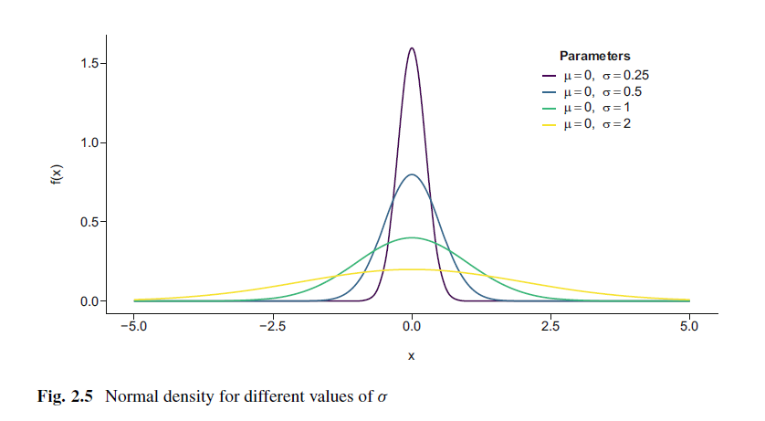
Figure 2.5 shows several normal distributions with mean \(\mu=0\) and different values for the SD \(\sigma\).
-About 67% of the observations occur within one SD and about 95% occur within 2 SDs of the mean.pdf plot
ggplot(data = data.frame(x = c(-5,5)), aes(x)) +
stat_function(fun = dnorm, args = list(mean = 0, sd = 1), aes(colour = "N(0,1)")) +
stat_function(fun = dnorm, args = list(mean = -2, sd = 1), aes(colour = "N(-2,1)")) +
stat_function(fun = dnorm, args = list(mean = 2, sd = 1), aes(colour = "N(2,1)")) +
scale_x_continuous(name = "x", breaks = -5:5) +
labs(colour = "Dist.") +
ggtitle(expression(paste( "Normal Dist. when ", mu, " = -2, 0, 2")))
ggplot(data = data.frame(x = c(-5,5)), aes(x)) +
stat_function(fun = dnorm, args = list(mean = 0, sd = 1), aes(colour = "N(0,1)")) +
stat_function(fun = dnorm, args = list(mean = 0, sd = sqrt(2)), aes(colour = "N(0,2)")) +
stat_function(fun = dnorm, args = list(mean = 0, sd = 2), aes(colour = "N(0,4)")) +
scale_x_continuous(name = "x", breaks = -5:5) +
labs(colour = "Dist.") +
ggtitle(expression(paste( "Normal Dist. when ", sigma^2, " = 1,2,4")))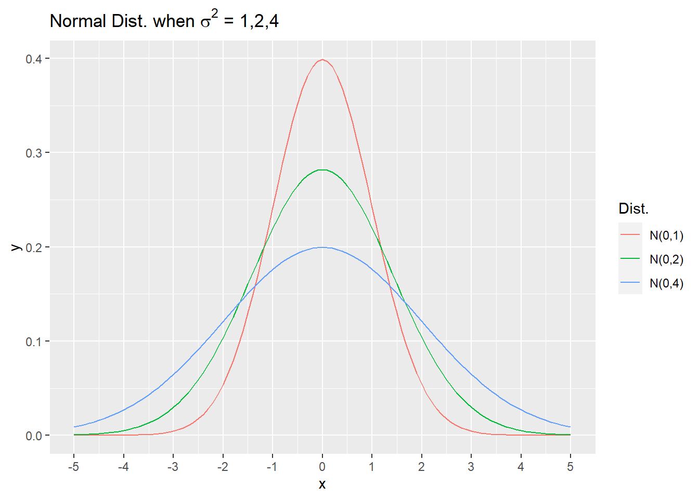
- comparison with simulated value
simul_norm <- rnorm(10000) %>% as.data.frame()
colnames(simul_norm) <- "simul"
sim_norm_plot <- simul_norm %>% ggplot(aes(x = simul)) +
geom_histogram(fill = "grey", color = "black",aes(y=..density..), binwidth = 0.2) +
ggtitle(expression(paste("10000 trials ; Simuation of Normal Dist. with ", mu, " = 0, ", sigma^2, " = 1")))
sim_norm_plot + stat_function(fun = dnorm, args = list(mean = 0, sd = 1), color = "red")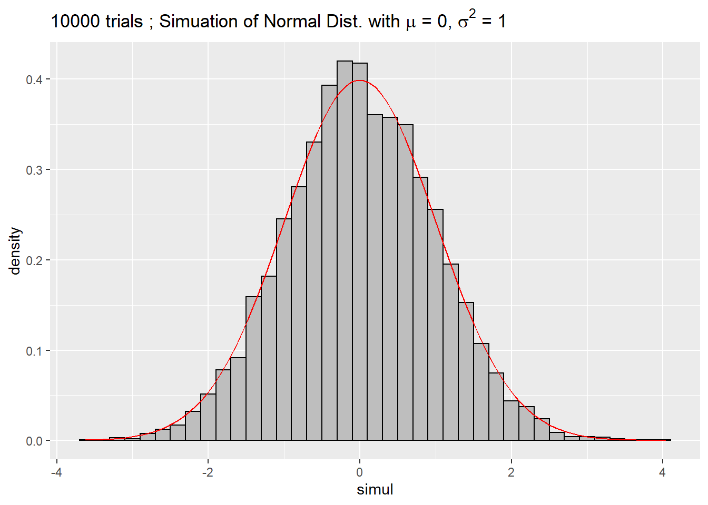
In many contexts, being more than 2 SDs from the mean is considered an atypical observation, and being 3 or more SDs from the mean is considered an “outlier.”
If \(Y\) has a normal distribution (mean \(\mu\), standard deviation \(\sigma\)), we call \(Y-\mu\) the centered variable and \(Z=(Y-\mu)/\sigma\) a standardized variable.
-The standardized variable: mean 0 and SD 1.-If \(Y\) is normal, \(Z\): standard normal distribution.-The percentiles of \(Z\) are regularly used for statistical inference.While the normal model approximates the distribution of many random variables, such as height or weight, it is by no means the optimal model for most health care outcomes.
-One of the most important distributions because of the central limit theorem (CLT).-CLT: distribution of sums of large numbers of independent random variables can be approximated by a normal distribution.-The distribution of the sample mean and many of the parameter estimates are well approximated by the normal distribution.
2.3.9 The Gamma and Lognormal Distributions for Right-Skewed Outcomes
Gamma distribution
-Appropriate for non-negative, continuous outcomes-Highly right-skewed, like medical expenditures.Gamma probability density funciton
\[ f(x\;;\;\alpha, \; \beta) = \frac{1}{\Gamma(\alpha)\beta^\alpha}x^{\alpha-1} e^{-\frac{x}{\beta}}, \; x>0, \;\alpha>0, \; \beta>0\]
\(E(X) = \alpha\beta\), \(Var(X) = \alpha \beta^2\)
- gamma function \(\Gamma(\alpha) = \int_{0}^{\infty} \; t^{\alpha-1}e^t \;dt\)
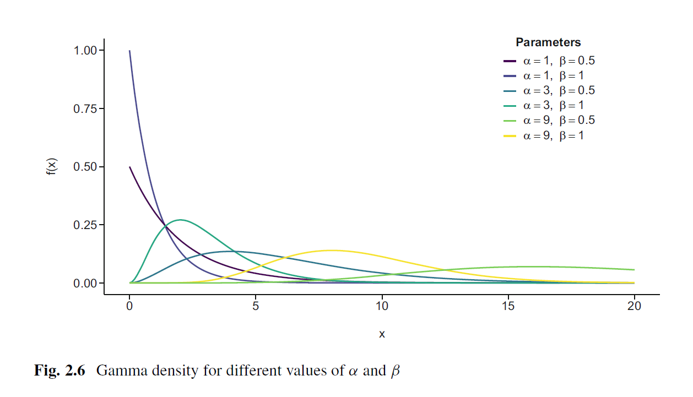
Figure 2.6 graphs different gamma distributions and demonstrates the flexibility of the functional form.
pdf plot
ggplot(data = data.frame(x = c(0,10), y = c(0,1)), aes(x,y)) +
stat_function(fun = dgamma, args = list(1, 0.5), aes(colour = "Gamma(1,0.5)")) +
stat_function(fun = dgamma, args = list(1, 1), aes(colour = "Gamma(1,1)")) +
stat_function(fun = dgamma, args = list(3, 1), aes(colour = "Gamma(3,1)")) +
stat_function(fun = dgamma, args = list(3, 2), aes(colour = "Gamma(3,2)")) +
stat_function(fun = dgamma, args = list(5, 1), aes(colour = "Gamma(5,1)")) +
stat_function(fun = dgamma, args = list(5, 5), aes(colour = "Gamma(5,5)")) +
ggtitle(label = "Gamma Dist. with different parameters")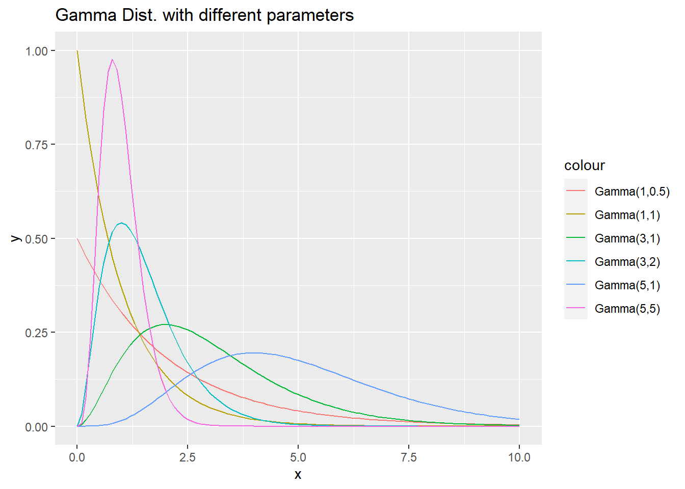
- comparison with simulated value
simul_gamma <- rgamma(10000, 3,2) %>% as.data.frame()
colnames(simul_gamma) <- "simul"
sim_gamma_plot <- simul_gamma %>% ggplot(aes(x = simul)) +
geom_histogram(fill = "grey", color = "black",aes(y=..density..), binwidth = 0.2) +
ggtitle(expression(paste("10000 trials ; Simuation of Gamma Dist. with ", alpha, " = 3, ", beta, " = 2")))
sim_gamma_plot + stat_function(fun = dgamma, args = list(3,2), color = "red")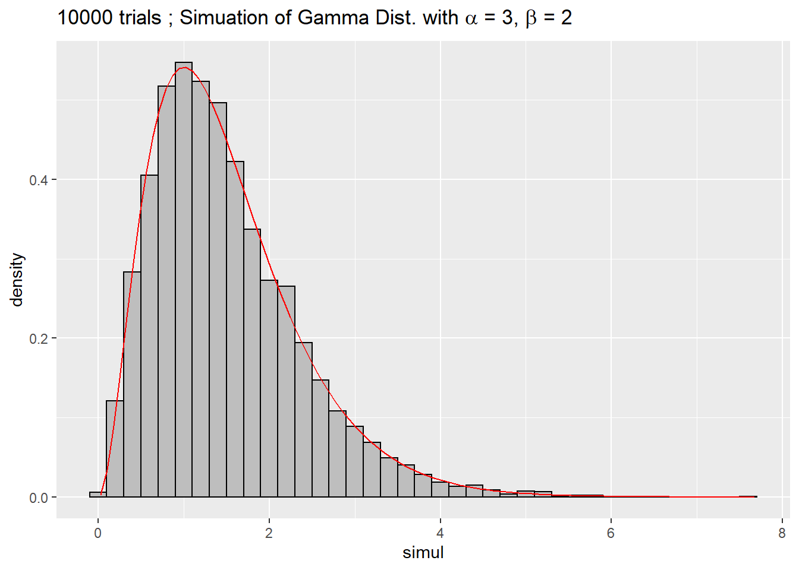
Two parameters: denote by \(\alpha\) and \(\beta\).
-mean: \(\alpha/\beta\) and the variance: \(\alpha/\beta^2\).-Variance is related to the mean and can be greater than or less than the mean, depending on the value of \(\beta\).Lognormal distribution
-For modeling right-skewed outcomes: lognormal.-If its log has a normal distribution.-Arises from exponentiating a normal random variable.If \(Y\) has a \(N(\mu, \sigma^2)\) distribution, then we say that \(exp(Y)\) has a lognormal distribution with parameters \(\mu\) and \(\sigma^2\). Its mean is not \(exp(μ)\) but rather:
\[ E[exp (Y )]=exp(\mu + \frac{1}{2}\sigma^2). \]
- Probability density function
\[ f_Y(y) = \frac{1}{y \sigma \sqrt{2\pi}} exp (-\frac{(ln \;y-\mu)^2}{2 \sigma^2}) \;, \; y >0\]
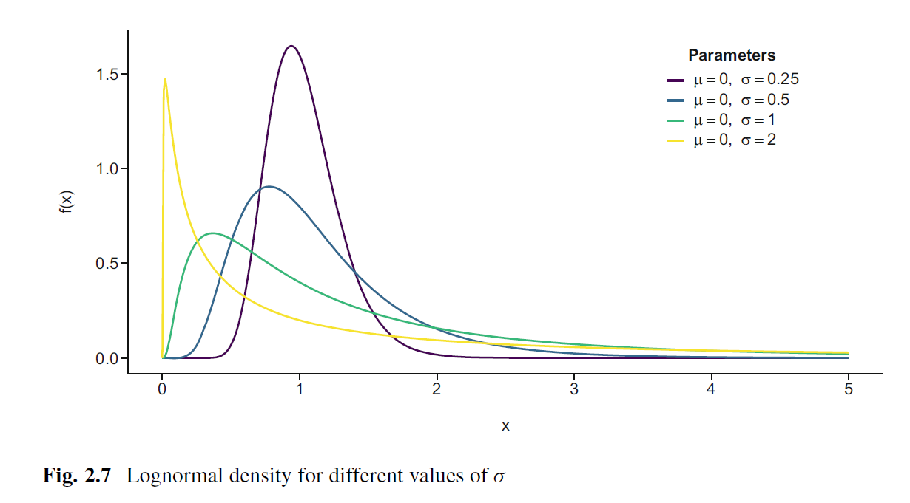
Figure 2.7 graphs several lognormal distributions.
The figure shows the PDFs for \(exp(Y)\), where the mean of \(Y\) is zero and the standard deviation of \(Y\) varies from 0.25 to 2.
2.3.10 pdf plot
ggplot(data = data.frame(x = c(0,20), y = c(0,1)), aes(x,y)) +
stat_function(fun = dlnorm, args = list(0, 0.5), aes(colour = "lognormal(0, 0.5)")) +
stat_function(fun = dlnorm, args = list(1, 0.5), aes(colour = "lognormal(1, 0.5)")) +
stat_function(fun = dlnorm, args = list(1, 1), aes(colour = "lognormal(1, 1)")) +
stat_function(fun = dlnorm, args = list(2, 0.5), aes(colour = "lognormal(2, 0.5)")) +
stat_function(fun = dlnorm, args = list(2, 1), aes(colour = "lognormal(2, 1)")) +
ggtitle(label = "Log Normal Dist. with different parameters") + labs(y = "f(x)")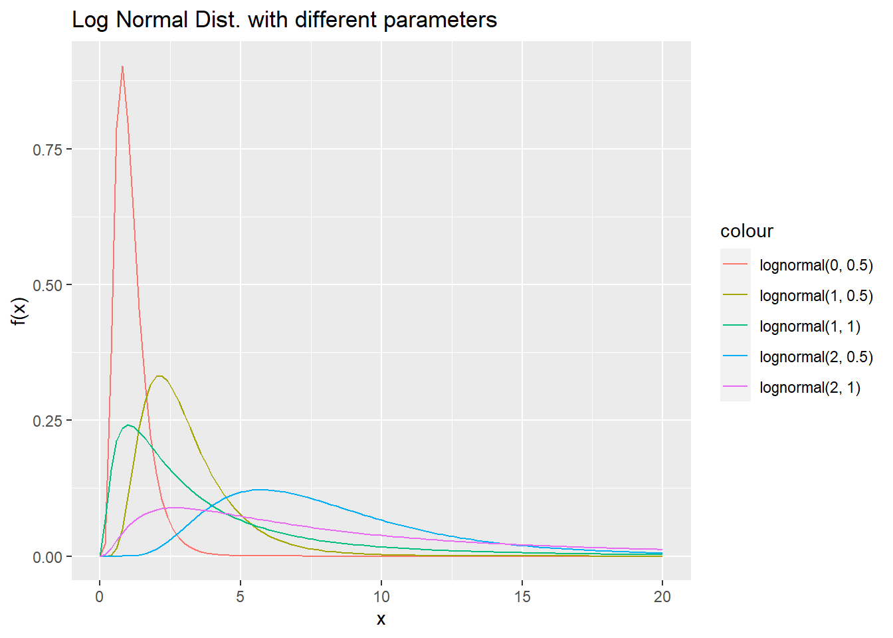
2.3.11 comparison with simulated value
simul_lnorm <- rlnorm(10000, 1,0.5) %>% as.data.frame()
colnames(simul_lnorm) <- "simul"
sim_lnorm_plot <- simul_lnorm %>% ggplot(aes(x = simul)) +
geom_histogram(fill = "grey", color = "black",aes(y=..density..), binwidth = 0.2) +
ggtitle(expression(paste("10000 trials ; Simuation of Log Normal Dist. with ", mu, " = 1, ", sigma^2, " = 0.5")))
sim_lnorm_plot + stat_function(fun = dlnorm, args = list(1,0.5),color = "red")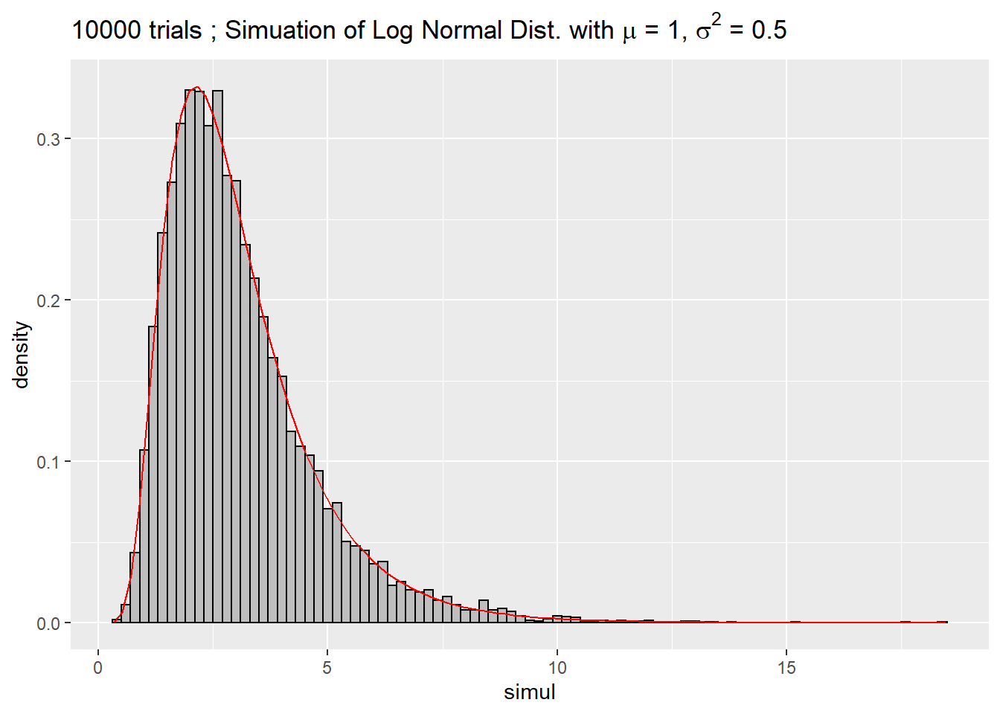
Any regression analysis that logs the dependent variable before running the regression is implicitly assuming the outcome follows a lognormal distribution.
-Logging the outcome variable and then conducting a regression analysis based on the normal distribution equates to assuming that the original outcome (before logging) is lognormal.-Lognormal distribution was traditionally favored for modeling medical costs because it can have a heavy-tailed distribution, well suited for capturing a non-trivial frequency of exceptionally large observations.But, retransforming regression coefficients to the metric of original scale is not always straightforward.
Retransformation issues with respect to the mean using the MEPS data.
-Suppose \(Y\) reflects the log of a health expenditure outcome, and the mean of \(Y\) is \(\mu\). And then what is the mean of expenditures?-The mean of expenditures is \(exp(\mu)\)?
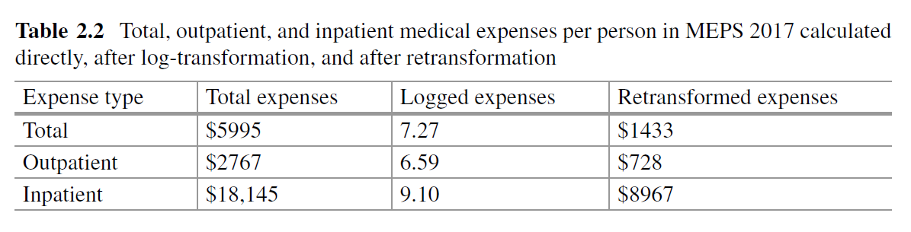
Table 2.2 shows medical costs from the MEPS 2017 data.
-Three columns of mean estimates corresponding to three types of costs: total, inpatient, and outpatient medical expenditures for the year.-Some subjects had zero expenditures for one or more of these outcomes, and they were excluded for simplicity.-First column: \(E(Y)\),-Second column: \(E[log(Y)]\)-Third column: \(exp(E[log(Y)])\)Although mathematically \(E(Y)=exp{log[E(Y)]}\), the third column does not get us back to the first column.
We cannot simply exchange the calculation of the mean of a variable and its log; the order of the operations is important.
Indeed, in each case, the first column is greater than the third column, reflecting the general relationship:
\[ E(Y) = E(exp[log(Y)]) \ge exp(E[log(Y)]). \]
In fact, when we exponentiate a normal random variable, the mean depends not only on the mean of the original random variable but also on its variance.
Formally, if \(E[log(Y)]= \mu\) and \(Var[log(Y)]= \sigma^2\), then:
\[ E(Y) = exp(\mu +\frac{1}{2}\sigma^2) = exp(\mu) × exp(\frac{1}{2}\sigma^2). \]
- If the log-transformed outcome is truly normally distributed, the median is not affected by the order of operations, and the median of \(exp(Y)\) is equal to \(exp(median(Y))\). Thus, an alternative to modeling the mean of \(Y\) in this setting would be to use a quantile regression model.
2.4 Hypothesis Testing and Statistical Inference
Hypothesis testing is the most well-known—and the most controversial—tool for statistical inference.
Inference: process by which sample estimates are used to answer research questions and address specified hypotheses about the population.
Hypothesis testing is a statistical procedure that is used to reach a yes–no decision about a hypothesis based on a sample estimate of the quantity of interest (e.g., the sample mean or a regression coefficient).
-Satistical procedure used to reach a decision about a hypothesis based on a sample while quantifying the risk that the decision made is wrong.-One-way street, permitting only one decision: rejection of a specified (null) hypothesis \(H_0\), which is typically set up to be the opposite of what we wish to investigate.-Example: if we hypothesize that inpatient expenditures depend on self-reported health, we would set up our null hypothesis \(H_0\) to be that these two random variables are not associated.-Rejecting \(H_0\) would amount to “proving” our hypothesis.-Reject \(H_0\) if the sample data appear to contradict it; specifically, if our estimate is not close to the hypothesized value.The core of the hypothesis testing procedure
-To control the chance that this is a mistake.-* To calculate the chance of mistakenly rejecting \(H_0\), we assume that the null hypothesis is indeed correct.-Then, we calculate the p-value, which is the probability of obtaining an estimate as or more extreme than that observed, where more extreme means further away from \(H_0\).-Low p-value means that our estimate is not consistent with \(H_0\).-We infer that there is only a small chance that the data we observed were generated under the null hypothesis and therefore a correspondingly low chance of being wrong by rejecting it.-If the p-value is small enough (e.g., less than 0.05), we reject the null hypothesis and cite the p-value as a measure of the strength of evidence in support of this decision.Note the difference between these two interpretations: the first is a statement about the hypothesis, and the second is a statement about the data.
-* We can only make statements about the data and their likelihood under \(H_0\).-One-way structure of the procedure only permits inferring that the observed data are inconsistent with \(H_0\).-There is no converse; we cannot infer that the observed data are consistent with \(H_0\), even if the p-value is large.-In this case, we can only issue a statement that we do not have evidence to reject \(H_0\).The historical convention is that a p-value below 0.05 is “statistically significant” and justifies rejection of the null hypothesis.
What are the problems with a standard 0.05 threshold for a p-value?
-For one thing, p-values may be small even in the absence of practically significant evidence against the null hypothesis.-This frequently occurs when sample sizes are very large, as is the case in many publicly available health care databases.It is not uncommon in such settings to obtain an estimate of the coefficient of interest that is close to zero but has a tiny p-value.
Conversely, p-values may be larger than 0.05 even when the observed evidence against the hypothesis is compelling.
-This happens most often when the sample is small and there is enough uncertainty that we cannot tell whether the observed data are really inconsistent with \(H_0\).We say that the power of the test is inadequate, where power is defined as the probability of correctly rejecting \(H_0\) if it is indeed false.
-Power is closely linked to sample size, and an important step in planning or designing a study is to make sure that the sample size is large enough so that practically important departures from \(H_0\) can be detected.The existence of a standard 0.05 threshold can lead to manipulation when there are incentives to rejecting H0.
-A dataset can be “p-hacked” by applying multiple methods or models and then reporting only the results of those that lead to a small p-value without reporting the others.Methodological manipulations:
-Exclusion criteria (e.g., restricting to subjects within a certain age range)-Choosing a specific metric for variables (e.g., dichotomizing a continuous covariate at a carefully selected cut point)-Choosing how to process data (e.g., dropping subjects with certain kinds of missing data)-Using a specific test (e.g., performing a t-test rather than a non-parametric Wilcoxon test).By making certain choices, p-values can be manipulated to produce results that end up being statistically significant.
It is reasonable to apply multiple methods to confirm robustness of any inferences, but these should all be reported, particularly if they do not all produce the same conclusion.
Further issue
-When there are multiple comparisons made in a dataset, the chance of at least one producing a small p-value increases.-Analyses involving multiple comparisons may occur when there is no specific scientific question driving the analysis and in multiple regression with more than a single covariate.-Example: suppose we are interested in understanding the correlates of total medical expenditures, but we have not formulated any hypotheses about specific dependencies.-If we test each available covariate individually and use the 0.05 threshold to select which are significant correlates of total expenditures, the probability of incorrectly rejecting the null hypothesis each time will be 0.05, but the probability of incorrectly rejecting the null hypothesis at least once could be considerably greater than 0.05.-If we conduct \(k\) independent tests, the probability of at least one incorrect rejection is \(1-(1-0.05)k\), which works out to 0.23 for \(k=5\) tests and to 0.40 for \(k=10\) tests.Many different approaches have been advanced to deal with the multiple comparisons problem.
-The simplest and most common is to conduct each test using a more stringent criterion to reject the null hypothesis, so that the overall error rate remains at or close to 0.05.-When there are very large numbers of tests, for example, in the setting of a high-dimensional genomic analysis, alternative approaches have been developed based on controlling the false discovery rate.While many academic research journals and reviewers still expect p-values to be reported, there is growing recognition of the limitations of p-values and the need for reproducibility.